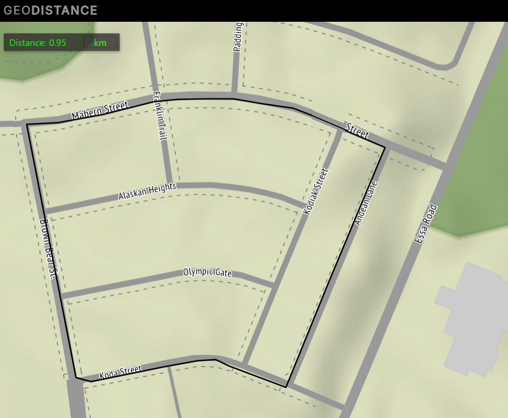

Athletics / Running I1 · interval log
Faster loops.
Same route.
Interval training for pace and VO₂ max on I1, a 0.95 km neighbourhood loop. 4 sessions logged since Sep 22.

Every logged session · Sep 22 → Oct 3, 2026. Descriptive, not a training plan.
01 / Every interval
Every session finished faster than it started.
● Sep 22● Sep 26● Sep 30● Oct 3Lower is faster.
Fade is last interval minus first; a negative fade means the session finished faster than it started.
02 / Session averages
4:13 to 3:41 in 4 sessions.
Recorded averages are kept as written. On Sep 26 the written average differs from the mean of the listed intervals by more than rounding.
03 / The log
Every interval, as written.
| Date | Route | Intervals | Mean | Written average | Fastest | Spread | Fade | Pace /km |
|---|---|---|---|---|---|---|---|---|
| Sep 22 | I1 | 4:35 · 4:13 · 3:51 | 4:13 | 4:13 | 3:51 | 44 s | -44 s | 4:26 |
| Sep 26 | I1 | 4:10 · 3:48 · 3:47 · 3:56 | 3:55 | 3:56 | 3:47 | 23 s | -14 s | 4:08 |
| Sep 30 | I1 | 3:56 · 3:43 · 3:47 · 3:45 | 3:48 | 3:48 | 3:43 | 13 s | -11 s | 4:00 |
| Oct 3 | I1 | 3:42 · 3:40 · 3:42 · 3:39 | 3:41 | 3:41 | 3:39 | 3 s | -3 s | 3:52 |
04 / Then and now
Best times from 2013 and 2017.
Rough estimates recalled from the major training blocks; earlier logs were lost. Track repeats and a neighbourhood loop are different efforts, so compare paces loosely.
| Year | Session | Best repeat | Pace |
|---|---|---|---|
| 2013 | 12 × 400 m | 1:08 | 2:50 /km |
| 2017 | 8 × 800 m | 2:42 | 3:23 /km |
| 2017 | 4 × 1600 m | 5:38 | 3:31 /km |
| 2026 | I1 loop (0.95 km) | 3:39 | 3:51 /km |
The evidence desk
How these numbers are made.
- Source: records/athletics/running/Interval_Data.txt, read line by line; any unreadable line stops the build.
- Pace assumes each interval is one 0.95 km loop of I1 (GeoDistance measurement shown on the route map).
- Means are computed from the listed intervals; written averages are shown beside them, never replaced.
Owner notes / Adding data
Add a session.
- Open
records/athletics/running/Interval_Data.txtin the pandas_projects folder. It is plain text (.txt). The CSV and JSON files on this page are exports made from it at every build; editing them changes nothing. - Add a block per session: a line like
I1 - (10/6/2026) - 4 Intervals, then onem:sstime per line, thenAvg: m:ss. The interval count must match the times listed; the written average is kept beside the computed mean. - Rebuild from pandas_projects with
python -B -m site_content.build --also-local. Any line the build cannot read stops it with the line number. - Publish by committing and pushing the liammspandasprojects repository.
The latest entry, as written:
I1 - (10/3/2026) - 4 Intervals 3:42 3:40 3:42 3:39 Avg: 3:41
An older copy at LiamMs_PandasProjects/Gaming-and-Performance-Log/Athletics/ is checked too: if it differs from the file above, the build stops instead of skipping the edit.